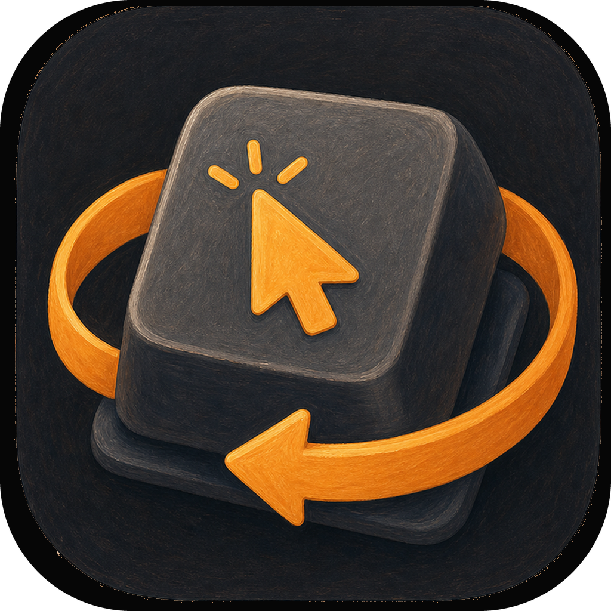
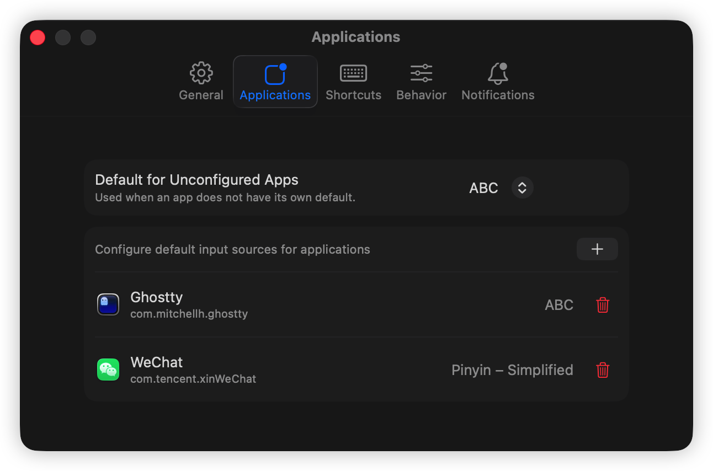

Per-app defaults
Assign a preferred keyboard layout or input method to individual apps, with a global fallback for everything else.

InputGurumacOS menu bar utility
Keyboard input sources that follow the app you are using, without interrupting the work in front of you.

Built for multilingual Macs
InputGuru keeps Xcode, browsers, terminals, editors, notes, and chat apps on the keyboard input source each one needs. When you switch manually, it respects that choice for a configurable window, then quietly returns to your rules.
Features
Assign a preferred keyboard layout or input method to individual apps, with a global fallback for everything else.
Switch from the menu bar or a global shortcut and preserve the choice for a configurable timeout.
Typing near the end of an override window can extend it, so active writing is not cut off by automation.
Map the input sources you use most to global shortcuts and choose which ones appear in the menu.
Keep the menu short by exposing only selected sources, while still seeing current source and override status.
Show lightweight change notifications near the cursor or in a screen corner, with duration and padding controls.
Snapshots
Workflow
Choose the default input source for each app and an optional fallback for unconfigured apps.
Use a shortcut or the menu bar when your current task needs a different source.
After the override window, InputGuru resumes the expected per-app behavior.
Available soon
A focused utility for people who move between languages, editors, browsers, terminals, and chat all day.